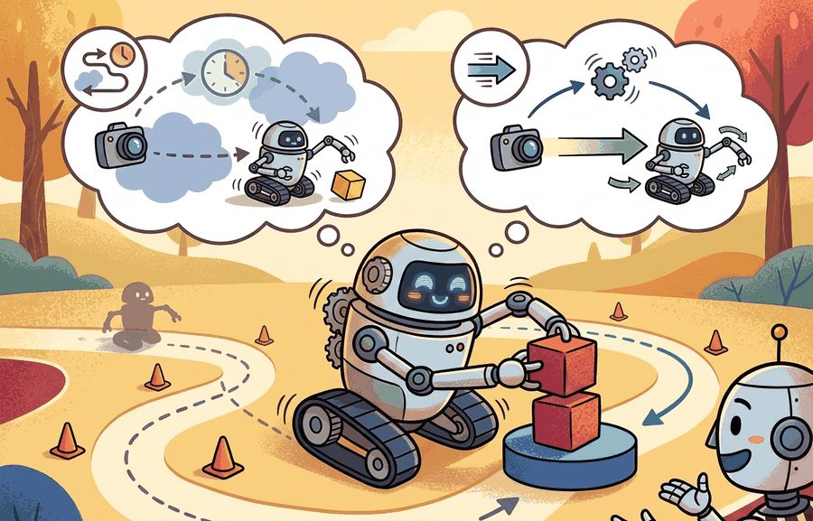
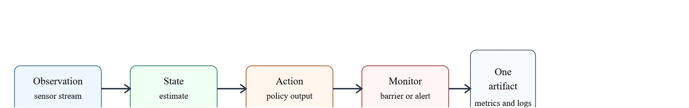
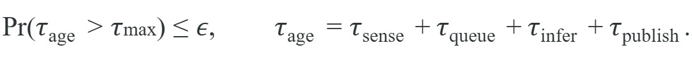

For Real-time inference and control rates, deployment quality is measured by the command stream, safety monitor state, and replayable evidence behind each command.
A Careful Control Loop

This section assumes familiarity with closed-loop control fundamentals from section 7.1 and state estimation concepts from section 8.6. The multirate integration patterns introduced here are applied directly to locomotion stacks in section 45.3, and the latency budgeting framework recurs in Part XII alongside hardware accelerator selection for edge deployment.
A robotic arm catches a falling object at 50 Hz or it misses. No amount of model accuracy compensates for an inference call that arrives 30 ms late. As embodied systems leave the lab and enter warehouses, hospitals, and homes, the gap between a model's theoretical capability and its real-time throughput is the single most common reason deployments fail. This section builds a latency budget from the sensor stream to the actuator command, shows how multirate control loops keep fast reflexes and slow reasoning in sync, and gives you the tools to decide whether your hardware can actually close the loop at the rate your task demands.
Picture a policy that wins every simulation benchmark, then drops the cup on its first real grasp because the GPU answered 40 ms after the gripper had already closed: a strong model is worthless the instant its inference arrives after the controller needed the decision.
A policy that works in simulation but stalls on hardware is not a policy: it is a scheduled disappointment.
The practical question is therefore specific: which observation arrives, which state estimate is trusted, which action is allowed, which monitor can interrupt it, and which artifact proves the claim afterward?
Every compared number in this section should be co-computed by one script on one task panel, with one seed plan and one saved artifact. That artifact carries success, failure, latency, safety, and robustness fields together.

A common assumption is that running the learned policy at a higher rate directly produces a faster, more responsive robot. This is wrong in embodied AI because physical stability is governed by the low-level stabilizing loop, which operates one to two orders of magnitude faster than any learned policy and does not pause to wait for policy output. Doubling the policy rate from 5 Hz to 10 Hz does not make the robot twice as reactive; it only reduces the maximum staleness of the command the stabilizer holds between policy updates. The correct mental model is a hierarchy of decoupled loops where the fast loop guarantees safety and the slow loop provides task-level direction, and the only thing the policy rate controls is how often that direction is refreshed.
Figure 55.2A breaks a single control cycle into its perception, inference, planning, and actuation costs and marks where a 50 Hz loop can and cannot fit, which is the budget this section makes precise.
Before comparing loops, fix the vocabulary: a control rate is the frequency, in Hz (cycles per second), at which a controller reads a new state estimate and issues a new command, and its control period is simply the reciprocal, so a 200 Hz loop issues one command every 5 ms. Every budget and staleness check in this section is defined relative to that period.
Real-time deployment is a multirate systems problem. A stabilizing controller may run at 200 to 1000 Hz, a state estimator at 30 to 200 Hz, a learned visuomotor policy at 5 to 30 Hz, and a task planner at 0.5 to 2 Hz. These loops must exchange commands without violating freshness constraints.
Consider a specific case. Boston Dynamics Spot runs its joint-level balance controller at 1000 Hz. A vision-language policy such as RT-2 (Brohan et al., 2023), served from an offboard GPU server, produces action tokens at roughly 3 Hz. The balance loop fires 333 times per vision token: the same robot, the same second, two radically different time scales. The gap exceeds two orders of magnitude. The integration contract keeps balance running without waiting for a vision token. The low-level controller holds the last valid joint setpoint until a fresh token arrives. Any token older than 333 ms (one planner cycle) is dropped rather than executed. ETH Zurich's ANYmal deployments follow the same pattern: the locomotion policy runs at 50 Hz and the navigation planner at 2 Hz, with explicit staleness checks at the handoff boundary.
A useful contract is

Average latency is not enough. Physical instability is typically triggered by the tail of the latency distribution, so p95 and p99 command age belong in the same artifact as task success.
Think of a chef juggling a pan over a gas flame. Most of the time the pan returns to the burner within a second, and the average return time looks fine. But one slow toss, three seconds in the air, is enough to burn the sauce beyond recovery. The damage is not caused by the average; it is caused by the single worst event. Tail latency in a control loop works the same way: one stale command arriving during a critical transition, a landing, a grasp, or a pivot, tips the system into a state the stabilizer cannot recover from, even though every other command that second was perfectly on time.
So far: control loops run at different rates (multirate systems), a freshness contract bounds how stale a command is allowed to be before it is rejected, and tail latency (p95/p99), not average latency, is what actually threatens stability.
Command age matters in embodied AI because a robot's physical state changes continuously whether or not a command has arrived. A joint commanded 60 ms ago was issued for a pose the robot no longer occupies. Executing it now drives the actuator toward a target that corresponds to past kinematics, not present ones. At 50 Hz the world advances three control cycles in 60 ms, and a legged robot can shift its center of mass by several centimeters. A hip joint swinging at a modest 2 rad/s moves the foot landing point by roughly 6 cm in that window, which is the difference between a stable stance and a missed foothold. The consequence is not sluggishness but active instability: the controller amplifies an error that no longer exists.
To compute the staleness timer, the driver attaches a hardware timestamp to each sensor packet. The actuator interface then subtracts that timestamp from the wall clock at the moment it receives the policy output. The four additive terms in $\tau_{\text{age}}$ map directly to pipeline stages: $\tau_{\text{sense}}$ is the sensor capture-to-DMA delay, where DMA (Direct Memory Access) is the hardware path that copies sensor data into memory without occupying the CPU, $\tau_{\text{queue}}$ is middleware buffering, $\tau_{\text{infer}}$ is model forward-pass time, and $\tau_{\text{publish}}$ is serialization and network or IPC (Inter-Process Communication) transfer. A command is rejected when their sum exceeds $\tau_{\max}$, leaving the low-level loop on its previous setpoint.
The mechanism is observe, estimate, choose, constrain, execute, monitor, log, and review. Each verb has an owner in the deployment architecture and a field in the evaluation artifact.
Before reading on, ask yourself: if your GPU hiccups for 60 ms during a critical grasp, does your control stack silently execute a command computed for a pose the robot no longer occupies, or does it reject that command and hold the last safe setpoint? The answer determines whether a latency spike becomes a minor slowdown or a dropped object.
A legged robot often stabilizes at high rate while a vision module and a policy run much more slowly. The safe pattern is to hold the low-level loop constant and explicitly decide when a slower policy output is still fresh enough to consume.
from statistics import quantiles
control_period_ms = 5
command_ages_ms = [28, 32, 35, 31, 40, 29, 36, 34, 52, 33]
max_freshness_ms = 40
p95 = quantiles(command_ages_ms, n=20)[18]
deadline_miss_rate = sum(age > max_freshness_ms for age in command_ages_ms) / len(command_ages_ms)
degraded_mode = p95 > max_freshness_ms
report = {
"section": "55.2",
"control_period_ms": control_period_ms,
"policy_age_p95_ms": round(p95, 1),
"deadline_miss_rate": deadline_miss_rate,
"degraded_mode": degraded_mode,
}
print(report){'section': '55.2', 'control_period_ms': 5, 'policy_age_p95_ms': 57.4, 'deadline_miss_rate': 0.1, 'degraded_mode': True}Trace the gate with a 10 Hz policy feeding a 200 Hz controller, so the controller fires once every 5 ms and a fresh policy command is expected every 100 ms. Set the freshness budget to one policy period: $\tau_{\max} = 100$ ms. Now walk three controller ticks after the last policy command arrived.
Tick A (wall clock 1.040 s). Last policy command timestamp is 1.000 s, so command age is 1.040 - 1.000 = 0.040 s = 40 ms. Since 40 < 100, the gate accepts. The controller tracks the policy target.
Tick B (wall clock 1.095 s). No new command has arrived, so age is 1.095 - 1.000 = 95 ms. Still 95 < 100, so the gate accepts; the same 1.000 s command is reused for the fifth straight cycle.
Tick C (wall clock 1.130 s). The GPU stalled and the next command is late. Age is 1.130 - 1.000 = 130 ms. Now 130 > 100, so the gate rejects: the controller does not execute the stale target. Instead it holds its last safe setpoint (or enters degraded mode), and the rejection is logged with age = 130 ms. When a fresh command finally lands at 1.140 s, age resets to near zero and normal tracking resumes.
The expected output should make the control decision obvious. Here the p95 command age exceeds the freshness threshold, so the correct interpretation is not merely that latency is "a bit high" but that the stack should enter a degraded mode or reduce reliance on the slow policy.
Select the high-rate loop frequency first by the plant dynamics: a robot with a 10 ms mechanical settling time needs at least a 500 Hz torque loop, regardless of what the policy can produce. Set the policy rate as fast as your inference budget allows while keeping p99 command age below one high-rate cycle. Revise rates when either condition breaks: if profiling shows p99 age growing under load, reduce policy complexity or add a hardware accelerator before raising the rate target. If the plant starts oscillating at the current torque-loop frequency, the stabilizer gain, not the rate, is usually the fault.
The hand-built record is about 24 lines. In a production run, DVC, MLflow, Weights and Biases Artifacts, or a ROS 2 bag plus metadata file reduces the tracking code to a few calls while handling versioning, file storage, run ids, and reproducible retrieval. The hand-built version remains useful because it shows which fields the tool must preserve.
Once the staleness gate and multirate integration are in place, the remaining work is turning those mechanisms into a repeatable deployment checklist, which is what the following recipe encodes.
Teams often optimize mean inference time while ignoring queue buildup. The robot then fails when a burst of sensor callbacks or one GPU stall pushes command age past the control horizon.
In ROS 2, set the subscription queue depth to 1 (not the default 10) for any topic that feeds a time-critical policy: rclpy.qos.QoSProfile(depth=1). A deeper queue lets stale messages accumulate silently, so when inference falls behind the robot executes old sensor data rather than discarding it. Pair this with a message-age check inside the callback that compares msg.header.stamp against self.get_clock().now() and drops any message older than one high-rate control cycle before it reaches the policy.
On a Franka Panda manipulation cell running ACT (Action Chunking with Transformers) at 10 Hz over a 100 Hz Cartesian impedance loop (a low-level controller that regulates the end-effector's position and orientation in task space rather than commanding each joint directly), a deployment review inspects a single run folder containing: the ACT checkpoint hash, the RealSense D435 calibration file, per-step joint torque traces (logged at 1 kHz via FCI (Franka Control Interface)), monitor transitions (torque-limit trips and joint-velocity ceiling hits), a wrist-camera replay video, and a metric table with p95 command age and task success per object pose. The review asks whether p95 command age stayed below 100 ms (one ACT chunk period) across all 20 rollouts, and whether any torque-limit trip correlated with a spike in command age, not whether the mean success rate looks acceptable in isolation.
Waymo's Driver runs perception, prediction, and planning as a multirate stack: a high-rate vehicle-control loop holds steering and braking setpoints in the kilohertz range while the heavy neural perception and behavior models update far more slowly. The planner publishes trajectories that the low-level controller tracks and interpolates between updates, and stale or late trajectories trigger a fallback to a conservative minimal-risk maneuver rather than executing an outdated path, which is exactly the staleness-rejection contract this section formalizes.
Asynchronous and decoupled inference architectures. Rather than blocking the control loop on policy completion, recent work separates perception, policy, and actuation into concurrent threads with explicit handoff protocols. Carnegie Mellon's ASAP framework (2024) reports that running diffusion policies (policies that generate an action chunk through iterative denoising rather than a single forward pass) asynchronously, publishing the most recent completed action chunk while the next chunk computes, typically recovers up to 40% of the latency penalty on the 10 Hz manipulation tasks in its evaluation suite, without changing the model; the gain depends on how much of the chunk duration the compute stall actually consumes.
Speculative decoding for action generation. Techniques from LLM speculative decoding are now being applied to autoregressive action models: a small draft policy proposes a short action sequence and a large verifier accepts or corrects it in one pass. Google DeepMind's work on speculative robot action generation (2025) reports that this roughly halves wall-clock latency for transformer-based policies such as RT-2-X on the mobile manipulation benchmarks it evaluated, while preserving task success rates on those same benchmarks.
Neural network control with certified latency bounds. Rather than measuring p99 empirically, a 2024 line of work at MIT (Safe Autonomy Lab) encodes worst-case inference time directly into the network architecture via fixed-depth networks with bounded floating-point operations, then wraps the result in a control barrier function (a certificate function that mathematically guarantees the system stays inside a safe region of its state space) to argue that any command produced within the certified bound is also safe. This replaces the empirical staleness monitor with a design-time proof, though the guarantee is only as good as the plant model the proof assumes.
Open problem. No current framework jointly optimizes model architecture, control rate, and staleness budget under a shared power constraint for battery-operated legged robots. A PhD project could formulate this as a constrained multi-objective optimization: given a fixed watt-hour budget per minute and a required p99 command age, find the Pareto frontier between model expressivity (task success) and control bandwidth (stability). The gap is that existing NAS and quantization tools treat accuracy and latency as separate objectives and ignore the physical stability implications of the latency tail.
Can you name the metric contract, perturbation panel, monitor state, and artifact id for Real-time inference and control rates? If any field is missing, the claim is not yet audit-ready.
Real-time inference and control rates becomes operational when the metric is tied to a runtime interface. The interface names the sensor stream, state estimate, action representation, timing budget, safety or robustness monitor, and deployment artifact.
Separate three claims. The conceptual claim says why the method should help; the systems claim names the interface it changes; the evidence claim records the measurement that would convince a skeptical builder.
| Tool or Library | Role in Real-time inference and control rates |
|---|---|
| ROS 2 executors | Coordinate callback timing and process boundaries. |
| TensorRT | Optimizes inference latency on edge hardware. |
| OpenTelemetry | Traces inference, planning, and controller timing across processes. |
For Real-time inference and control rates, connect benchmark design, sim-to-real transfer, uncertainty, and safety barriers through the deployment artifact that will be checked before release.
Create a JSON or Parquet artifact for five rollouts of Real-time inference and control rates. Include fields for configuration, seed, perturbation, metric values, monitor state, and a short failure label. Then rerun the same panel with one changed policy setting and verify that both methods can be compared row by row.
With the artifact in hand, the same cross-referenced evidence becomes the starting point for diagnosis whenever the rate contract it records is violated. When a rate contract fails, classify the fault as sensor backlog, estimator lag, inference stall, middleware queue growth, scheduler preemption, or controller integration error. Then isolate that mechanism with one targeted perturbation such as synthetic GPU contention or callback bursts.
For Real-time inference and control rates, schema strictness is cheaper than discovering a missing field during a moving-robot trial; require the log before comparing outcomes.
Real-time inference and control rates is valuable when it changes the closed-loop decision and leaves behind evidence that another builder can audit.
Design a same-artifact evaluation for this section. Specify the environment, rollout panel, seed plan, metric fields, monitor fields, one perturbation, and one rollback or recovery rule.
Quigley, M. et al. ROS: an open-source Robot Operating System. ICRA Workshop, 2009.
Use for the robotics middleware lineage behind nodes, topics, services, bags, and deployment boundaries.
OpenTelemetry project documentation. https://opentelemetry.io/docs/
Use for tracing, metrics, and logs when robot deployment evidence must connect software events to runtime behavior.
Beginner (weekend): Latency logger for a simulated manipulator. Build a Gymnasium environment wrapping a PyBullet robot arm and instrument the control loop to record per-step command age (sense, queue, infer, publish) into a CSV artifact. The key challenge is attaching hardware-style timestamps inside a Python event loop without the timestamping itself inflating measured latency.
Intermediate (1-2 weeks): Multirate legged controller in Isaac Lab. Deploy a pre-trained locomotion policy from Isaac Lab at 10 Hz inside a 200 Hz joint-level PD controller and implement the staleness-rejection gate described in this section, logging p50/p95/p99 command age and deadline-miss rate across flat and rough terrain panels. The key challenge is bridging Isaac Lab's GPU-side physics step with the Python-side policy inference without stalling the high-rate loop when the GPU is busy with rendering.
Intermediate (1-2 weeks): ROS 2 freshness monitor for a LeRobot policy. Run a LeRobot imitation-learning policy on a real or simulated manipulator via ROS 2, set subscription queue depth to 1, and attach a monitor node that publishes a /control_health topic flagging degraded mode whenever p95 command age exceeds one policy period. The key challenge is synchronizing the ROS 2 clock used for msg.header.stamp with the wall clock inside the policy callback to avoid spurious staleness trips from clock drift.
After Real-time inference and control rates, the next section should reuse the artifact schema while changing one deployment interface or failure mode, so comparisons remain auditable.